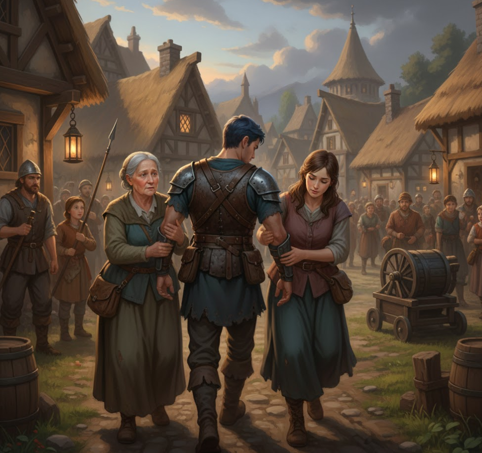
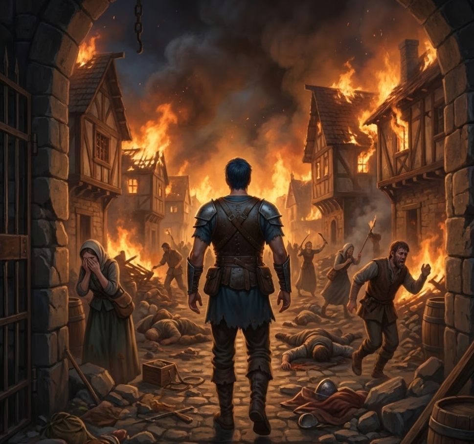
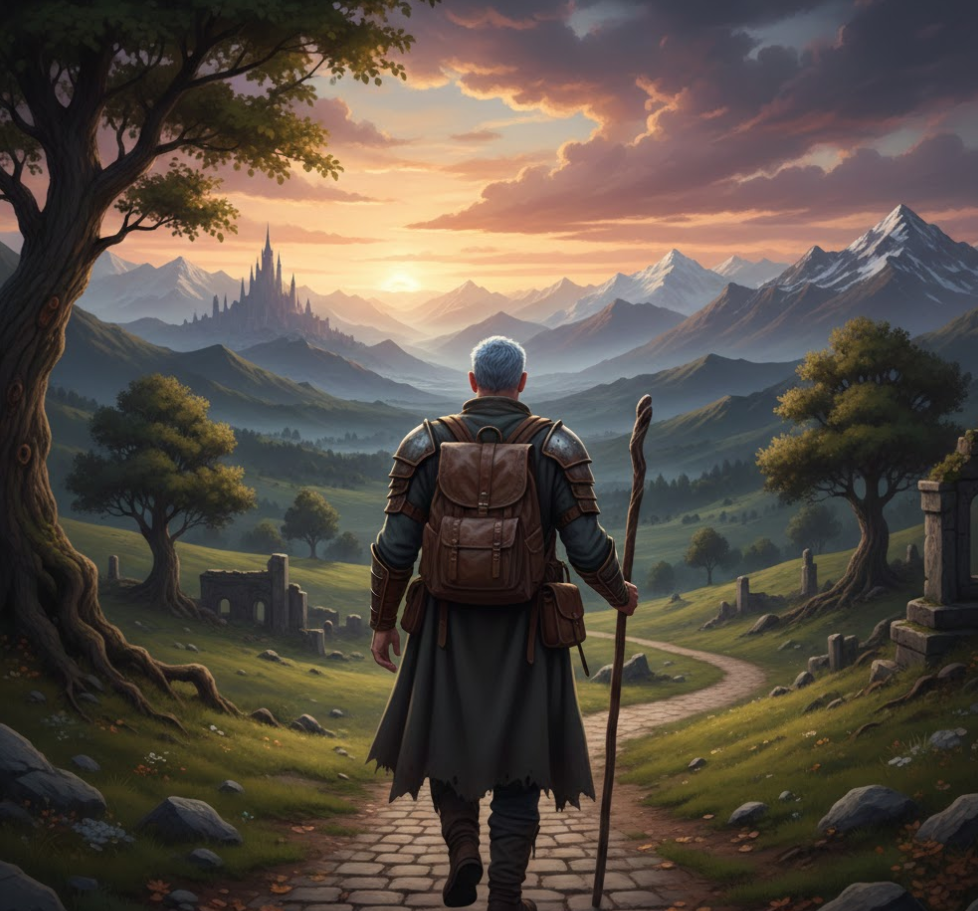
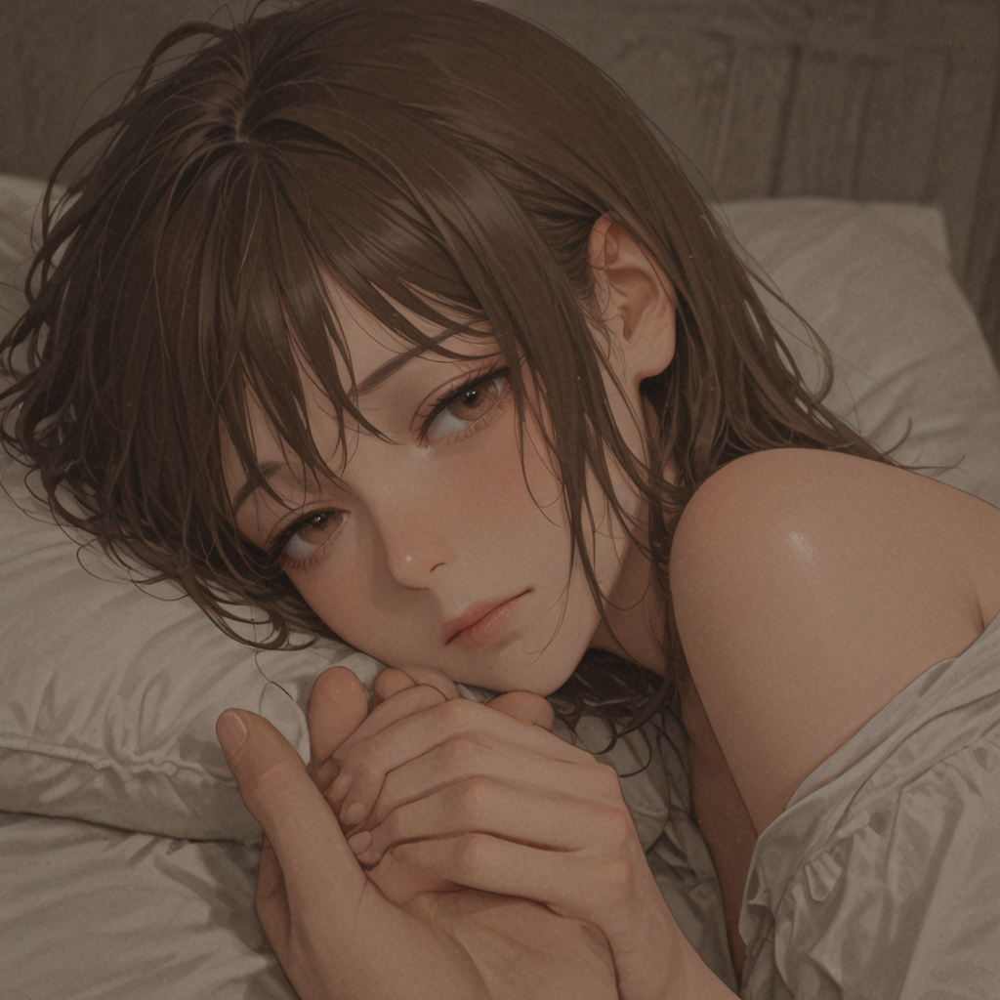
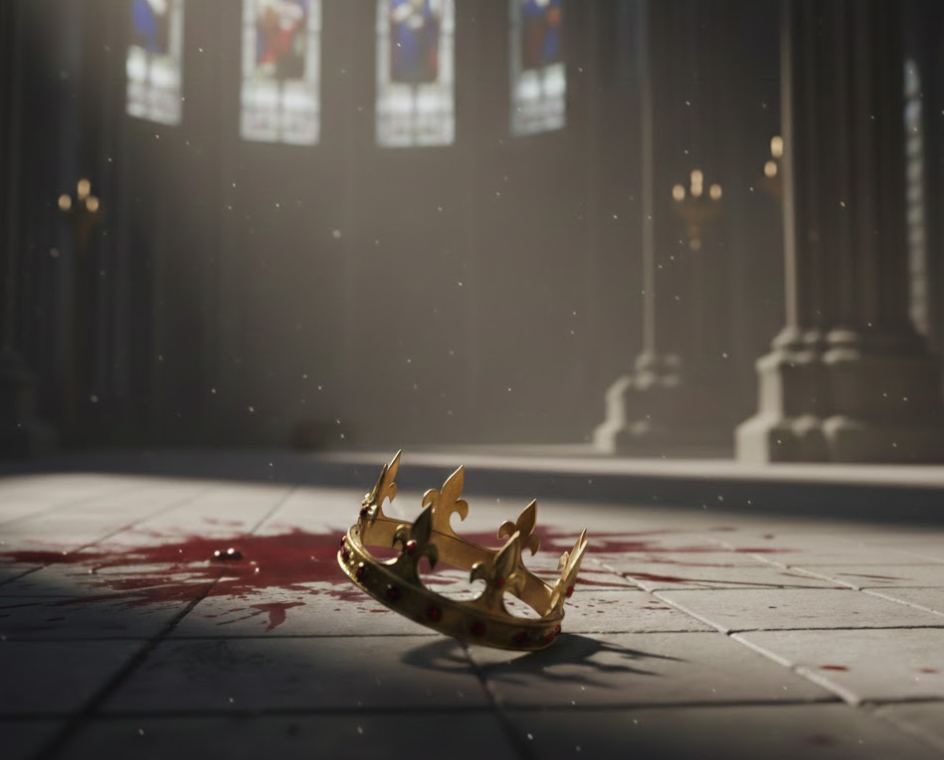

In questa sezione esploriamo la lore della fazione, analizzando la sua storia, la cultura e le relazioni con le altre fazioni.

La Fondazione dell'Impero
Molto è andato perduto in libri dimenticati, ma si dice che l'attuale Sovrano possieda scritti dello stesso Fondatore, così come diari dei sovrani precedenti. Queste affermazioni rimangono speculative, tuttavia, poiché non sono mai state confermate ufficialmente.
Ciò che viene insegnato nelle lezioni di storia è che il Fondatore apparve improvvisamente come un viandante in un piccolo villaggio, visibilmente scosso e disorientato. Dopo essersi adattato alla vita lì, migliorò gradualmente e significativamente la qualità della vita nell'insediamento attraverso idee innovative nell'organizzazione e nella tecnologia, che trasformarono rapidamente il villaggio in una piccola città. Nonostante ciò, rifiutò costantemente qualsiasi ruolo di leadership, affermando di essere semplicemente "non interessato".

La Notte della Tragedia
Un giorno, la città fu attaccata da briganti che la credevano una preda facile. Furono rapidamente sconfitti e fatti prigionieri. Una volta catturati, tuttavia, la gente cadde vittima del proprio senso di superiorità. I briganti implorarono di essere ammessi in città, sostenendo di essere stati "costretti al furto perché non c'era altra scelta". I cittadini—abituati al progresso e alla buona volontà—dimenticarono una verità cruciale: non tutte le persone diventeranno buone, e molte inganneranno.
Il Fondatore si oppose fermamente al loro rilascio e alla loro accettazione nella comunità, affermando che "i loro occhi sono gli stessi della gente della mia vecchia vita." Il sindaco e i suoi consiglieri respinsero questa accusa come infondata e ordinarono l'imprigionamento del Fondatore.
Quella notte stessa, i briganti rivelarono la loro vera natura. I resoconti non sono chiari sugli eventi esatti, ma si dice che diverse persone furono uccise e che alcune donne scomparvero o furono lasciate gravemente ferite. Vedendo alzarsi i fuochi dalla città, il Fondatore si liberò dalla sua cella e assistette in prima persona agli orrori di quella notte. Cacciò i briganti, uccidendo quelli che trovò e dichiarandoli "non redimibili".
Ciò che rimase fu la rovina della città che aveva lavorato così duramente per costruire—distrutta da un singolo errore. Da quel momento, si dice che abbia pronunciato solo tre parole: "Mai più". Questo evento sarà ricordato come la Notte della Tragedia nella storia.
Il Fondatore affrontò il sindaco, che si rifiutò di assumersi la responsabilità, incolpando invece i consiglieri. Mentre si rivoltavano l'uno contro l'altro in un gioco di accuse, il Fondatore si proclamò nuovo sindaco. Molti si opposero a lui, ma altri lo sostennero, ricordando i suoi contributi dal suo arrivo. Questo conflitto si intensificò in una breve guerra civile, che terminò rapidamente—il suo potere era su una scala completamente diversa.
"Non posso proteggervi da voi stessi."
La maggior parte di coloro che resistettero alla sua presa di potere furono imprigionati, mentre coloro che cospirarono o tentarono di incitare alla ribellione furono giustiziati. Iniziò una nuova era. Per molti, il Fondatore divenne un Salvatore; per altri, un Tiranno. Coloro che sostenevano quest'ultima visione furono esiliati o scomparvero silenziosamente.
Ciò che è certo è che la piccola città divenne l'attuale capitale, Padineon, e sotto la guida del Fondatore il reame si espanse—sia stabilendo nuovi insediamenti, sia assorbendo altre città sotto il suo dominio. Alcuni chiamano questo periodo un'età d'oro di rinnovamento e progresso; altri lo ricordano come un'era di repressione. Indipendentemente da ciò, l'Impero prosperò.
I consiglieri vicini al Fondatore scrissero in seguito che i suoi occhi sembravano sempre vuoti, come se guardasse il mondo per dovere piuttosto che per spirito genuino.

L'Eredità del Fondatore
Dopo cent'anni, il Fondatore invecchiò e si ammalò. Giaciuto sul letto di morte, si dice che abbia sussurrato: "No. Questa non può essere la fine. Rifiuto." Depose la sua armatura, mise da parte la sua spada e pose la corona sul suo comandante più fidato, dicendo:
Dopodiché, il Fondatore svanì per sempre. Nessuno sa dove sia andato, ma la sua eredità spirituale perdurò, portando avanti la sua volontà attraverso la gente del mondo.

Gli Anni Bui: Celid e Aerin
Nella storia del continente, c'è un periodo ben noto a tutti come gli "Anni Bui." L'Imperatore di quel tempo, Celid, era un onorevole Paladino, sposato con una bellissima donna di nome Aerin. Questa unione fu accolta con gioia, poiché Celid era considerato un individuo sensibile e profondamente premuroso. Sfortunatamente, la tragedia seguì presto.
Una terribile piaga si diffuse nel continente. Coloro che venivano infettati sviluppavano tosse grave e dolore atroce, e la malattia si trasmetteva facilmente attraverso il contatto cutaneo, causandone la diffusione a un ritmo allarmante. Purtroppo, la stessa Aerin rimase infetta. Fu costretta a letto, soffrendo costantemente. Mentre maghi e medici cercavano disperatamente una cura, Celid non lasciò mai il suo fianco, tenendole la mano e assistendo alla sua agonia, apparentemente immune alla piaga a causa della sua eccezionale costituzione come Imperatore.
Nonostante ogni sforzo, non fu trovata alcuna cura in tempo. Aerin morì urlando dal dolore tra le braccia di Celid. La sua più grande forza—la sua sensibilità—divenne la sua rovina. Qualcosa dentro di lui si spezzò. Celid arrivò a credere che coloro afflitti dalla piaga dovessero essere uccisi il più rapidamente possibile, per risparmiare loro il tormento di una morte lenta e agonizzante come quella che Aerin aveva sopportato. Le tenne la mano, guardò la sua lotta e sentì qualcosa dentro di lui cedere: l'uomo che aveva vissuto per proteggere gli altri vedeva ora una sola soluzione: pietà attraverso la morte.
Iniziò così una crociata per sterminare tutti gli infetti, inclusi quelli in altri regni, in nome del "bene supremo" e della pietà di risparmiare loro la sofferenza. Questo segnò la prima scappatoia documentata nella Volontà del Fondatore: se un Imperatore crede genuinamente che le sue azioni servano al benessere della gente, la Volontà non lo trattiene.
I regni vicini formarono presto un'alleanza per fermare Valkyrion e marciarono contro l'Imperatore. Lungo la strada, si unirono a loro ribelli dall'interno dell'Impero stesso—ufficiali e soldati che si opponevano alle azioni brutali del loro sovrano.

La battaglia decisiva ebbe luogo a Padineon, dove una coalizione di diverse razze e regni affrontò Celid. La maggior parte credeva che la battaglia fosse senza speranza. Eppure, si verificò una svolta inaspettata: la maggior parte delle anime vincolate all'interno della spada sacra rifiutò di colpire i ribelli, poiché anch'esse rifiutavano la volontà dell'Imperatore.
Indebolito e abbandonato dallo stesso potere che brandiva, Celid fu sconfitto. Nei suoi momenti finali, si chiese perché gli altri si rifiutassero di "salvare" le vittime della piaga come lui aveva cercato di fare, perché permettessero loro di soffrire. Con amara sfida, pose la corona sul comandante che guidava la ribellione.
Le conseguenze lasciarono profonde cicatrici nelle relazioni dell'Impero con le nazioni vicine. Molti ricordano le atrocità di quegli anni, mentre altri ricordano che persino all'interno di Valkyrion, gli ufficiali insorsero contro il proprio sovrano—prova che non tutti erano complici. Una verità, tuttavia, divenne innegabile: la Volontà del Fondatore non era infallibile.